This project builds up from 2D convolution and edge detection to image sharpening, hybrid images, and multiresolution blending. Almost everything here reduces to two primitives: convolving with a filter, and recombining images at different blur scales. Each section below states what I implemented, the parameters I chose, and why.
I implemented 2D convolution twice: once with four nested loops (the literal, unoptimized translation of the convolution formula), and once with two loops, where the innermost multiply-and-accumulate step is replaced by a single vectorized numpy operation (np.sum(patch * flipped_kernel)). Both versions flip the kernel 180° before sliding it across the image, which is what distinguishes true convolution from cross-correlation. For a symmetric filter like a box filter, flipping makes no difference, but for an asymmetric filter like Dx = [1, 0, -1] it flips the sign convention of the result.
Both implementations support zero-padding in two modes: "same" (output matches input size, padding by kernel_size // 2 on each side) and "full" (output is n + k - 1, capturing every possible overlap between kernel and image, even a single corner touching).
def convolve_four_loops(image, kernel, mode="same"):
kh, kw = kernel.shape
ih, iw = image.shape
flipped_kernel = kernel[::-1, ::-1] # flip 180 degrees
if mode == "same":
pad_h, pad_w = kh // 2, kw // 2
out_h, out_w = ih, iw
elif mode == "full":
pad_h, pad_w = kh - 1, kw - 1
out_h, out_w = ih + kh - 1, iw + kw - 1
else:
raise ValueError("mode must be 'same' or 'full'")
padded = np.zeros((ih + 2*pad_h, iw + 2*pad_w)) # zero padding
padded[pad_h:pad_h+ih, pad_w:pad_w+iw] = image
output = np.zeros((out_h, out_w))
for y in range(out_h): # every output row
for x in range(out_w): # every output column
total = 0.0
for i in range(kh): # every kernel row
for j in range(kw): # every kernel column
total += padded[y + i, x + j] * flipped_kernel[i, j]
output[y, x] = total
return outputdef convolve_two_loops(image, kernel, mode="same"):
kh, kw = kernel.shape
ih, iw = image.shape
flipped = kernel[::-1, ::-1]
if mode == "same":
pad_h, pad_w = kh // 2, kw // 2
out_h, out_w = ih, iw
elif mode == "full":
pad_h, pad_w = kh - 1, kw - 1
out_h, out_w = ih + kh - 1, iw + kw - 1
else:
raise ValueError("mode must be 'same' or 'full'")
padded = np.zeros((ih + 2*pad_h, iw + 2*pad_w))
padded[pad_h:pad_h+ih, pad_w:pad_w+iw] = image
output = np.zeros((out_h, out_w))
for y in range(out_h):
for x in range(out_w):
patch = padded[y:y+kh, x:x+kw]
output[y, x] = np.sum(patch * flipped) # dot product, vectorized
return output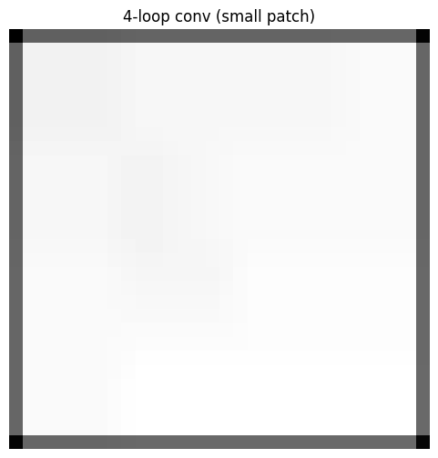
4-loop convolution on the 30x30 test patch (images/p11_patch.png)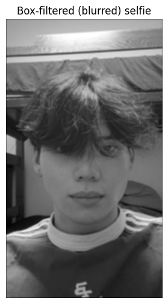
9x9 box-filtered selfie (images/p11_box.png)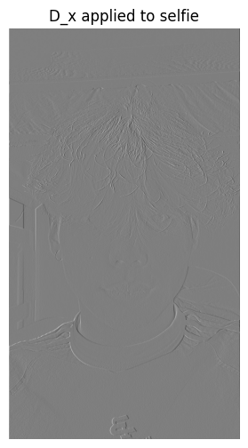
Dx applied to selfie (images/p11_dx.png)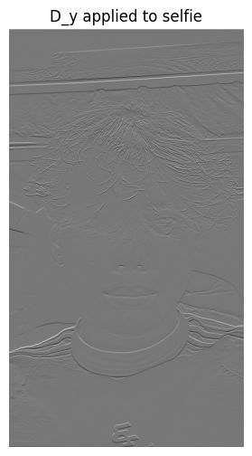
Dy applied to selfie (images/p11_dy.png)I compared all three implementations (4-loop, 2-loop, and scipy.signal.convolve2d) against each other using np.allclose, and all pairs matched.
4-loop vs 2-loop match: True
2-loop vs scipy match: TrueTimed with a 3×3 box filter, first on a 30×30 patch and then on a 200×200 crop:
| Implementation | 30×30 patch | 200×200 crop |
|---|---|---|
| Four loops | 0.0140 s | 0.14s |
| Two loops | 0.0089 s | 0.18s |
| scipy.signal.convolve2d | 0.00027 s | 0.0012s |
Even on the tiny patch, scipy is roughly 33× faster than my two-loop version. The reason is where the work happens: the four-loop version executes every multiply-add (kernel_height × kernel_width per output pixel) as interpreted Python. The two-loop version still loops over every output pixel in Python, but hands each kh × kw window to numpy as one vectorized operation, so the multiplication itself runs in compiled C. scipy.signal.convolve2d pushes both loops into compiled code, which is why it wins by another large factor.
I pad the image with zeros by kernel_size // 2 on each side before sliding the kernel, which is equivalent to SciPy's boundary="fill", fillvalue=0. This keeps the output the same size as the input, but pixels near the border get averaged with fake zeros, which pulls their brightness down. This shows up as a faint dark frame around blurred results (visible in the 9×9 box-filtered selfie). Mirroring the image at the edge (boundary="symm") avoids this artifact, which is why I switched to "symm" padding from Part 2.1 onward for blurring.
Using the standard cameraman test image, I computed the partial derivatives Dx and Dy by convolving with the finite-difference operators [1, 0, -1] (horizontal) and its transpose (vertical). Combining them into the gradient magnitude, sqrt(Dx² + Dy²), gives one "edge strength" value per pixel, independent of edge direction.
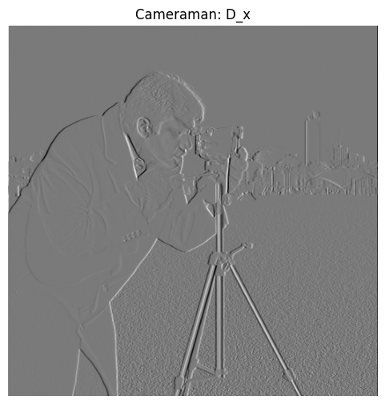
Cameraman Dx (images/p12_dx.png)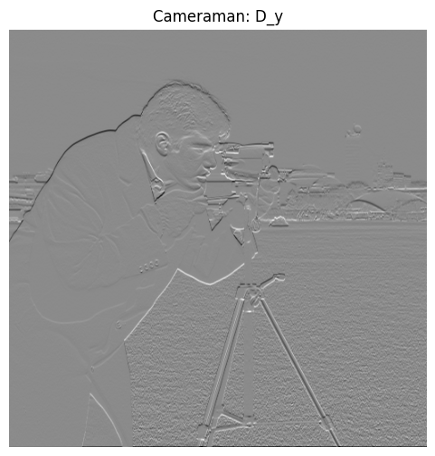
Cameraman Dy (images/p12_dy.png)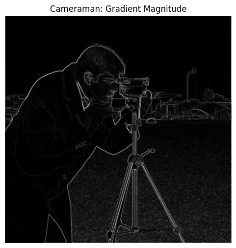
Gradient magnitude (images/p12_mag.png)I swept eight threshold values (0.05 to 0.5) rather than guessing a single number.
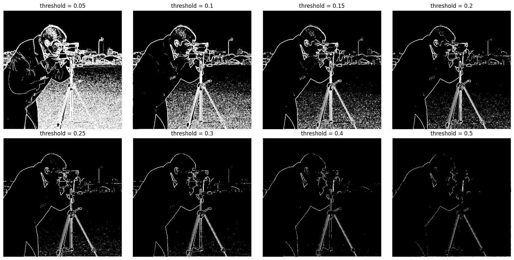
8-panel threshold sweep (images/p12_sweep.png)I chose threshold = 0.15. Below this value, the grass and sky region floods with speckled false edges from sensor noise. Above roughly 0.3, the tripod legs break into dashed segments and the faint building skyline disappears entirely, so real structure is discarded along with the noise. At 0.15 the background is clean while the tripod, coat outline, and skyline all remain solid and continuous.
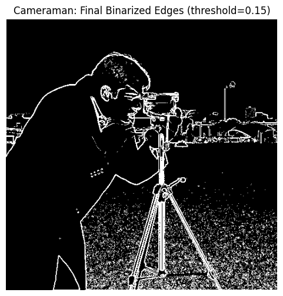
Binarized edge map, threshold 0.15 (images/p12_edges.png)The raw finite-difference edges from Part 1.2 are noisy because differentiation amplifies high-frequency content indiscriminately, including sensor noise. The fix is to smooth with a Gaussian before differentiating. I built the 2D Gaussian with cv2.getGaussianKernel() (ksize=9, sigma=2) to get a 1D bell curve, then took its outer product with its own transpose.
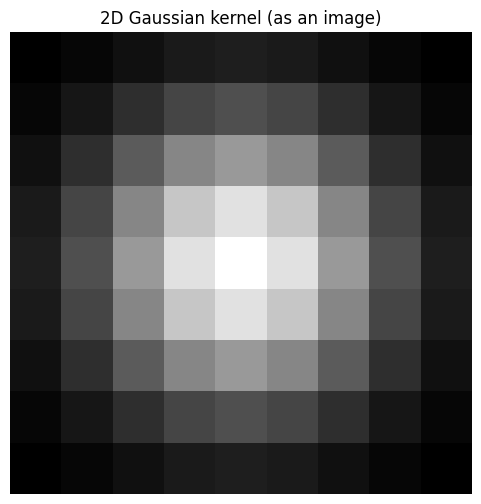
2D Gaussian kernel (images/p13_gauss.png)After blurring the cameraman and repeating the Dx/Dy/gradient-magnitude pipeline, the useful threshold dropped from 0.15 (unblurred) to 0.05 (blurred). Blurring spreads each brightness jump across more pixels, which lowers the peak gradient at every edge. I confirmed 0.05 with a finer sweep from 0.01 to 0.06: below it the grass gets speckly again, and above it the faint skyline starts to fade.
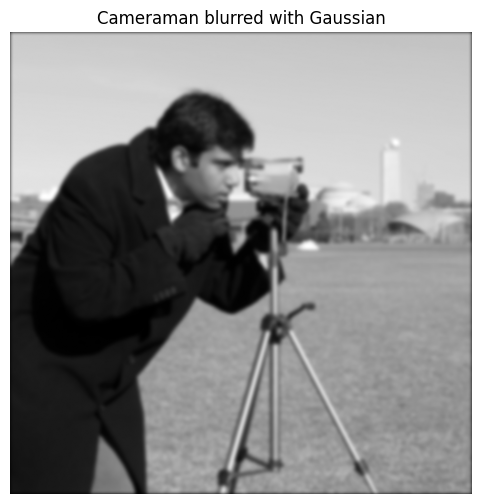
Blurred cameraman (images/p13_blur.png)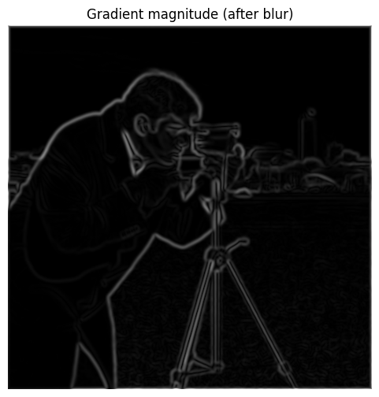
Gradient magnitude after blur (images/p13_mag.png)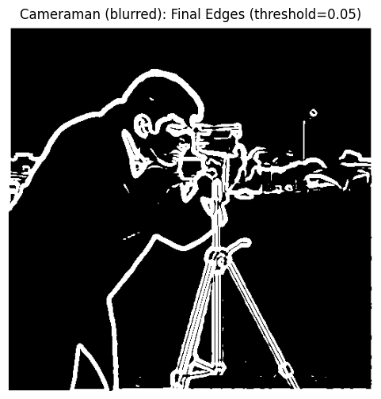
Edges at threshold 0.05 (images/p13_edges.png)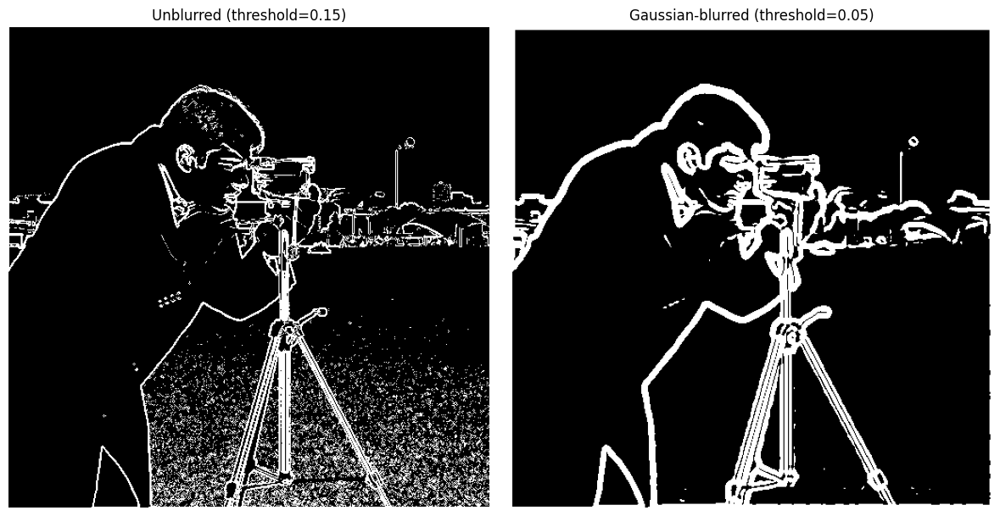
Unblurred (0.15) vs. blurred (0.05) edge maps (images/p13_compare.png)Blurring first produces edges that are noise-free and continuous rather than speckled and fragmented, at the cost of localization: edges become a few pixels thicker, and very fine details (like small camera knobs) start to merge. This is the smoothing-vs-precision tradeoff: noise robustness is bought by sacrificing some positional sharpness.
Because convolution is associative, Dx * (G * I) = (Dx * G) * I. Rather than blurring and then differentiating (two convolutions over the image), I convolved the small Gaussian kernel directly with Dx and Dy to get two combined DoG filters, and applied each to the original image in a single convolution.
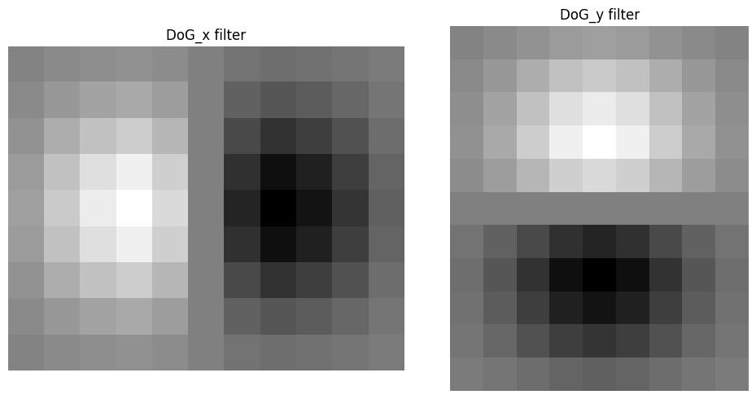
DoG_x filter (images/p13_dogx.png)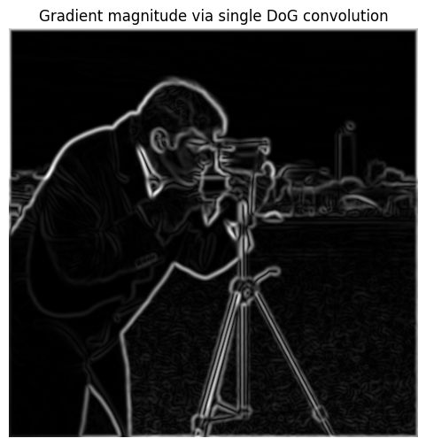
Cameraman gradient magnitude via single DoG convolution (images/p13_dog_result.png)Comparing the single-DoG result against the two-step blur-then-differentiate result:
Mean absolute difference (whole image): 0.0018
Max absolute difference (whole image): 0.35
Max absolute difference (interior only): 7.2e-16The whole-image comparison has a small mean but a larger max, which is the signature of a boundary-only discrepancy rather than a real error. Restricting to the interior (cropping a border as wide as the kernel) gives a max difference of 7.2e-16, which is floating-point noise, so the two methods are mathematically identical there. The mismatch at the border exists because the two-step method zero-pads twice (once per convolution) while the single-DoG method pads only once, so they make different assumptions about what lies outside the image.
A Gaussian blur is a low-pass filter: it keeps only the smooth, low-frequency content. Subtracting the blurred image from the original isolates what was removed, the high-frequency detail. Since an image tends to look sharper when its high frequencies are stronger, I add a scaled copy of that residual back to the original:
sharpened = image + alpha * (image - blur(image))This collapses into a single convolution kernel, (1 + alpha) * impulse - alpha * gaussian, though I implemented the explicit multi-step version for clarity. I blur with boundary="symm" so zero-padding doesn't create a dark border that then gets amplified, and clip results to [0, 1].
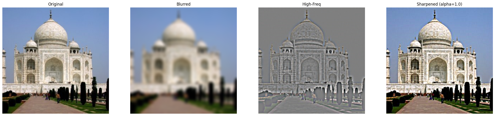
Taj Mahal: original / blurred / high-frequency residual / sharpened, alpha=1.0 (images/p21_taj_pipeline.png)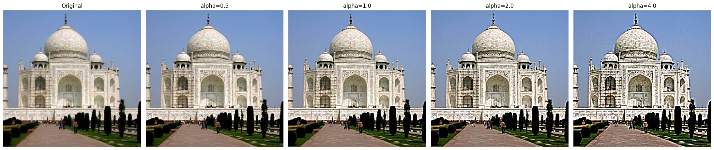
Alpha sweep 0.5 / 1.0 / 2.0 / 4.0 (images/p21_taj_alpha.png)At alpha=4.0, oversharpening artifacts appear: the sky and flat marble walls, which should be nearly featureless, pick up a grainy texture. Unsharp masking amplifies all high-frequency content equally, including the small amount of sensor noise present even in flat regions; it cannot tell detail from noise. I chose alpha = 1.0 as the featured result: a clear improvement in sharpness with no visible artifacts.
I applied the same pipeline to a second and a third image (the third is AI-generated/edited, to test a different kind of image statistics), choosing alpha for each with a sweep. For the third image, the small printed phone number in the background served as a legibility checkpoint: alpha=0.6 gave the clearest digits without looking harsh.
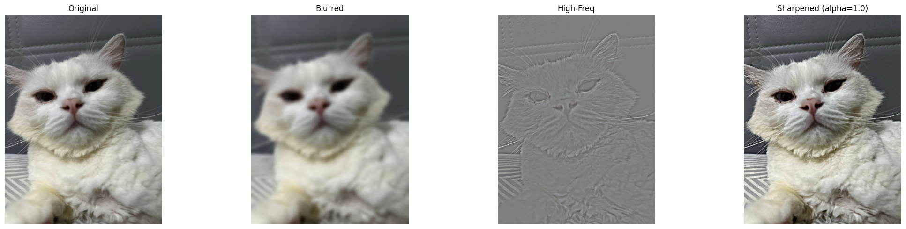
Second image: original / blurred / high-freq / sharpened, alpha=1.0 (images/p21_img2.png)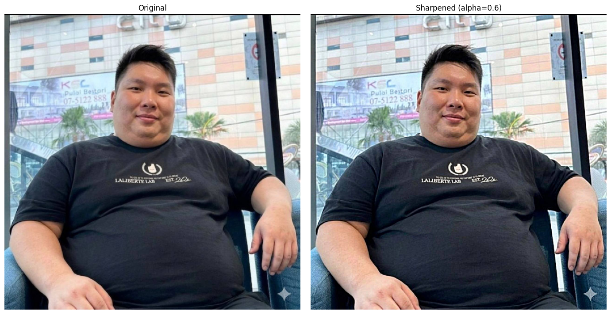
Third image: original vs sharpened, alpha=0.6 (images/p21_img3.png)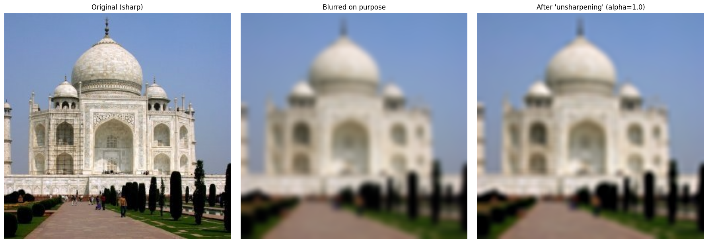
Sharp original / deliberately blurred (sigma=4) / re-sharpened (images/p21_recover.png)I took the sharp Taj Mahal, blurred it heavily (15×15 kernel, sigma=4), then tried to "unsharpen" it back with the same technique.
Unsharp masking only partially restores contrast at edges that survived the blur; it cannot recover fine detail, such as marble tile texture or window lattices, that the blur destroyed. It is a perceptual sharpening technique, not a true deblurring or inverse operation. Blurring is lossy: once a frequency band has been attenuated toward zero, no linear filter can invert that loss without also amplifying the noise left at that frequency.
Overview. A hybrid image combines the high-frequency detail of one image with the low-frequency content of another. Up close, perception is dominated by high frequencies, so the detail image reads clearly; from a distance (or when shrunk), only the low frequencies survive and the interpretation flips. I low-pass one image with a Gaussian, high-pass the other as image - gaussian(image), and add them.
Alignment. I used the provided align_image_code.py, which takes two corresponding points (both eyes, in matching order) on each image and aligns center, scale, and rotation before cropping to a common size. Since plt.ginput() does not work in Google Colab's inline backend, I replaced only the point-collection step with pixel coordinates read off a gridded display of each image; every other alignment function is unmodified.
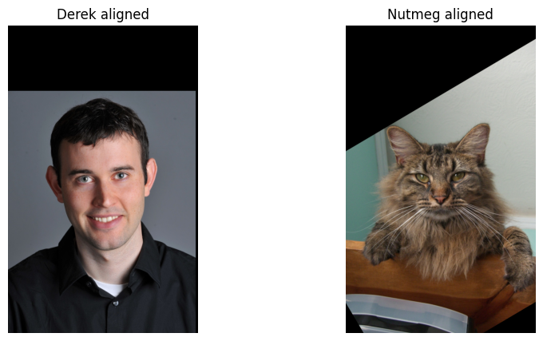
Derek and Nutmeg, aligned (images/p22_derek_aligned.png)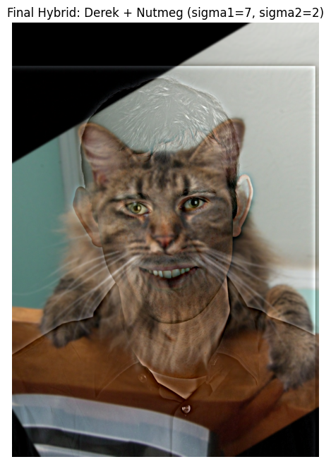
Final hybrid, sigma1=7, sigma2=2 (images/p22_derek_hybrid.png)Derek supplies the high frequencies (sigma1=7) and Nutmeg the low frequencies (sigma2=2), chosen from a 3×3 sweep. The black bar at the top of the aligned images is padding added by the recentering step; I cropped it off the final result.
I chose this pair (my second own hybrid, sigma1=5, sigma2=10) as my favorite. Anthony supplies the high frequencies and Will the low frequencies.
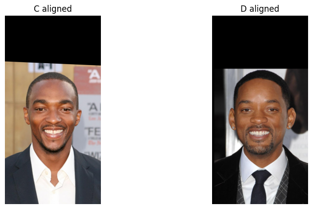
Anthony and Will, aligned (images/p22_aw_aligned.png)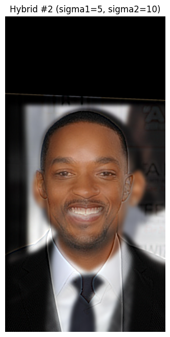
Final hybrid, sigma1=5, sigma2=10 (images/p22_aw_hybrid.png)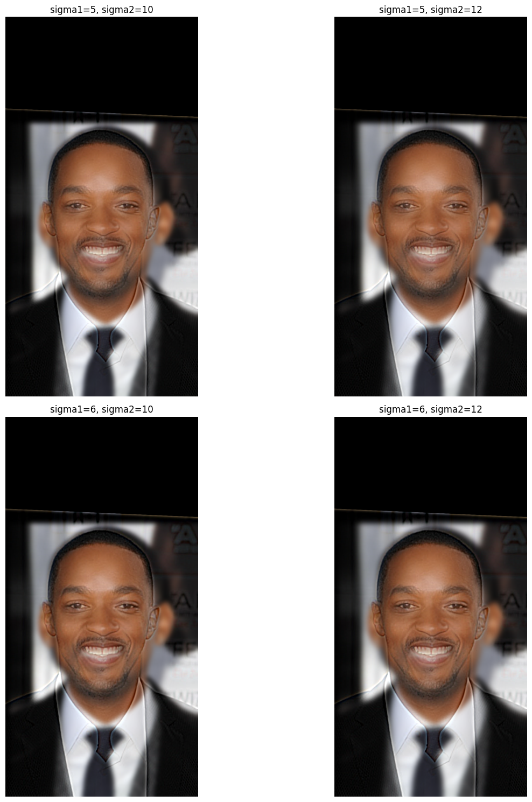
Sigma sweep for Anthony + Will (images/p22_aw_sweep.png)I compared candidate (sigma1, sigma2) combinations side by side and picked the one where Anthony reads clearly up close while Will dominates once the image is shrunk. Larger sigma2 leaves only Will's coarse shape; smaller sigma1 keeps more of Anthony's fine detail.
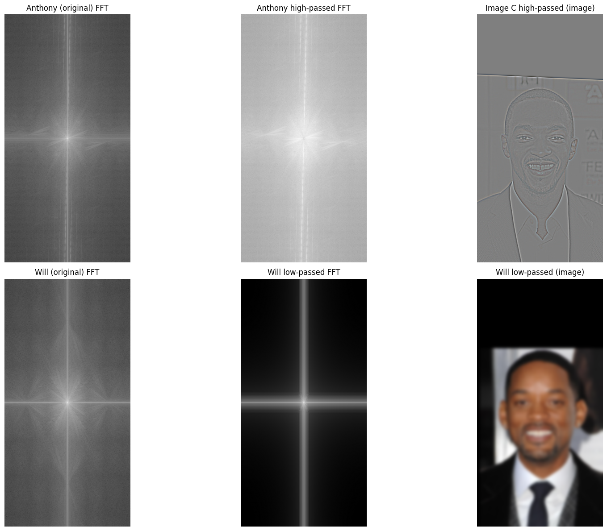
2x3 FFT grid (images/p22_aw_fft_grid.png)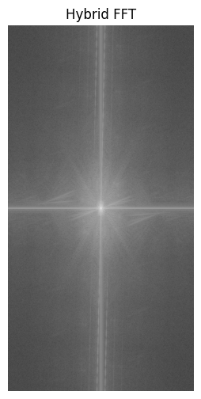
Hybrid FFT (images/p22_aw_fft_hybrid.png)Both input spectra spread energy broadly across frequencies. Anthony's high-passed spectrum has suppressed energy near the center (low frequencies removed), while Will's low-passed spectrum shows the opposite: energy concentrated near the center with the periphery suppressed. The hybrid's spectrum is the union of the two, bright at the center from Will's surviving low frequencies and toward the edges from Anthony's surviving high frequencies.
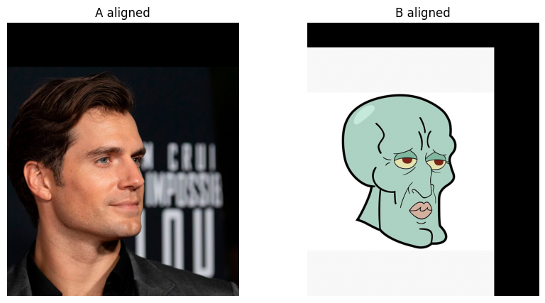
Cavill and Squidward, aligned (images/p22_cs_aligned.png)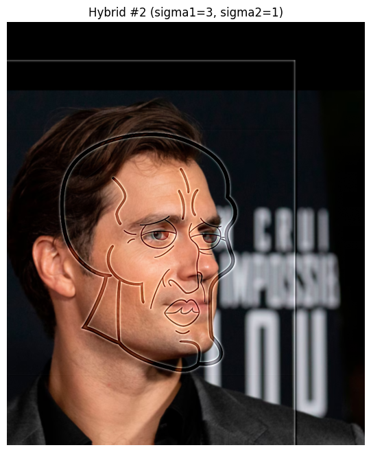
Final hybrid, sigma1=3, sigma2=1 (images/p22_cs_hybrid.png)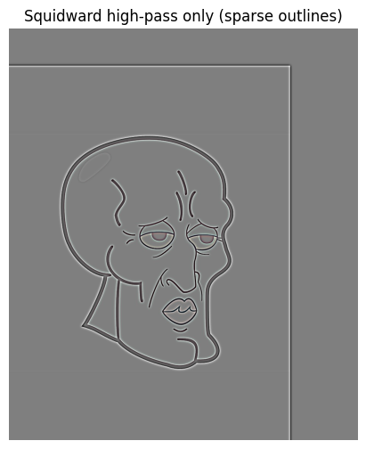
Squidward high-pass only (images/p22_cs_highpass.png)This pairing combines a photograph with a flat-shaded cartoon. The cartoon's "detail" is almost entirely thin black outline strokes on solid flat color, so it carries far less high-frequency energy than a textured photograph. The high-pass image above shows only sparse outlines on a flat gray field, so there isn't much high-frequency signal to work with.
As a result, even at my chosen cutoffs (sigma1=3, sigma2=1), the outlines read faintly rather than dominantly up close. I deliberately did not apply a gain multiplier to the high-pass component, and present the result as-is because it illustrates a real limitation: hybrid images work best when both sources have comparable frequency content. When one image is mostly flat, its high-pass contribution is sparse and gets overshadowed by the other image's low frequencies, no matter how the sigmas are tuned. Amplifying the high-pass term before combining would be the separate fix for that.
A stack behaves like a pyramid without downsampling: every level stays at full resolution, growing progressively blurrier. I implemented both from scratch, with no cv2.pyrDown() or skimage.transform.pyramid_gaussian().
def gaussian_stack(image, num_levels, sigma=2):
stack = [image.copy()]
for level in range(1, num_levels):
current_sigma = sigma * (2 ** (level - 1))
blurred = low_pass(image, current_sigma)
stack.append(blurred)
return stack
def laplacian_stack(gauss_stack):
lap_stack = [gauss_stack[i] - gauss_stack[i+1] for i in range(len(gauss_stack)-1)]
lap_stack.append(gauss_stack[-1]) # low-frequency residual
return lap_stackImplementation detail: sigma doubles at each level (and is applied to the original image) rather than reapplying a fixed sigma to the previous level. Repeating a small blur only grows the effective radius like sqrt(n) * sigma, so the coarsest level ends up barely blurrier than an early one. Doubling produces a rapidly widening blur, which matters directly in Part 2.4: a mask that doesn't blur enough at coarse levels can't widen the blended seam.
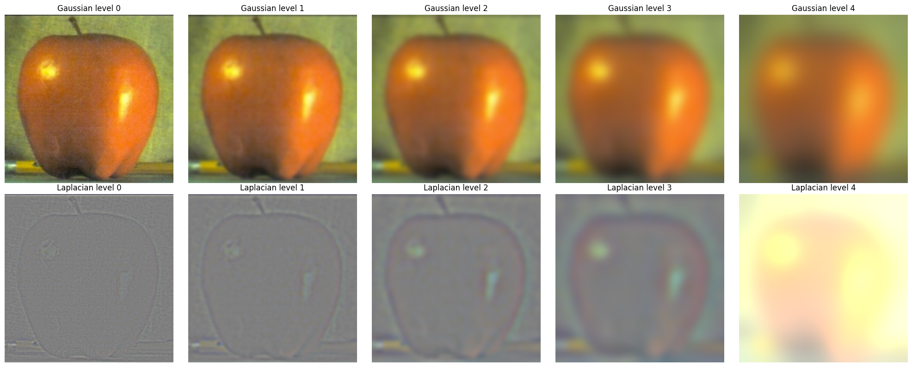
Apple Gaussian stack (images/p23_apple_g.png)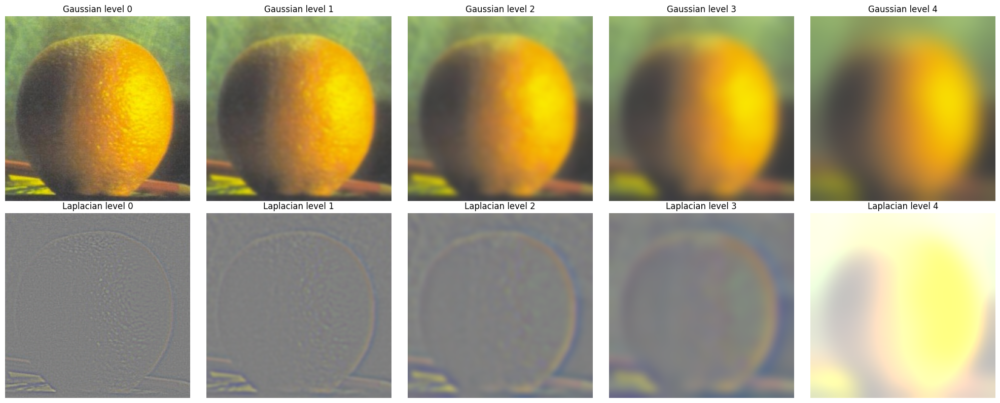
Orange Gaussian stack (images/p23_orange_g.png)The Laplacian levels are shown shifted by +0.5 so their near-zero values display as mid-gray. The last Laplacian level is not a difference but the final blurred Gaussian level (the low-frequency residual), which is why it looks like a real, blurry picture.
Summing every Laplacian level should reconstruct the original exactly: each level is a difference of consecutive Gaussian levels, so the sum telescopes to the first and last terms.
Max difference from original: 4.16e-17This confirms the decomposition is exact to floating-point precision.
Using the apple and orange Laplacian stacks and a Gaussian stack of a step-function mask (1 on the left/apple side, 0 on the right/orange side). Rows 1–3 show the high (level 0), medium (level 2), and low (level 4) frequency bands: the apple weighted by the mask, the orange weighted by one minus the mask, and their sum. Row 4 sums all levels, giving the full weighted apple, the full weighted orange, and the final blend.
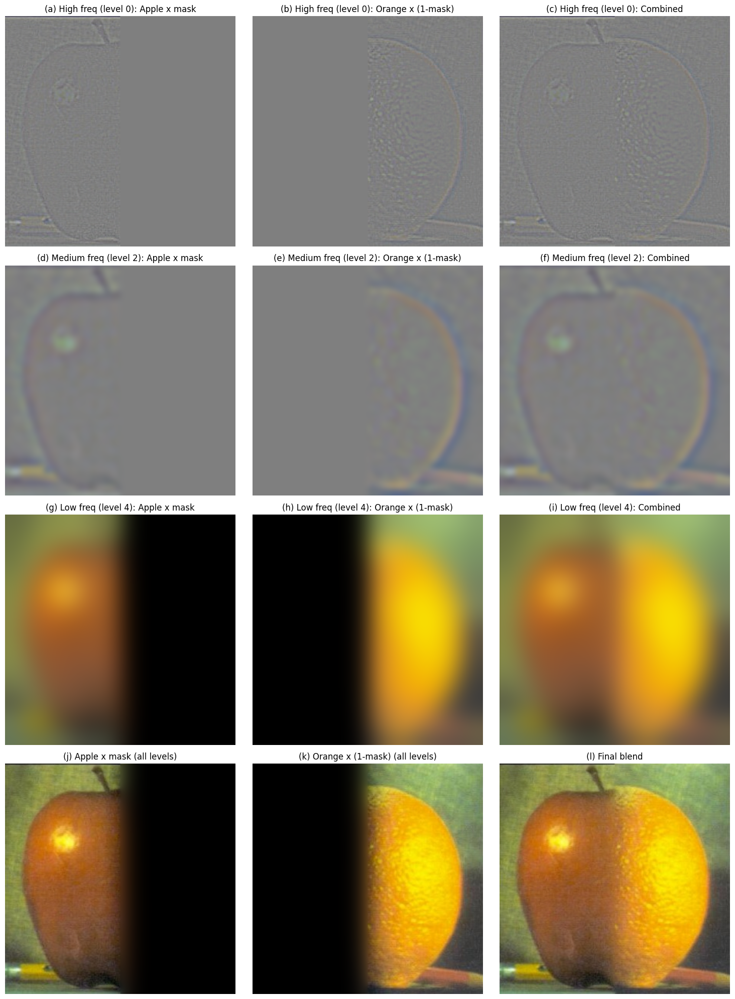
4x3 grid, panels (a)-(l) (images/p23_fig342.png)Reading down the columns shows the mechanism. At the finest level the mask transition is a sharp step, which costs nothing visually because that band carries little energy. By the medium level it has softened into a gradient, and at the coarsest level it is a wide, smooth ramp. This is why the final blend shows a gradual color transition across the fruit while fine texture switches over a much narrower region.
The algorithm. With stacks instead of downsampled pyramids, splicing two Laplacian stacks at a hard boundary leaves a clearly visible seam, since no downsample/blur/upsample step softens it. Instead the mask gets its own Gaussian stack, and each frequency band is blended with the mask blurred to that band's scale:
blended[level] = imageA_laplacian[level] * mask_gaussian[level] +
imageB_laplacian[level] * (1 - mask_gaussian[level])
result = sum(blended[level] for all levels)At the finest level the mask is nearly a sharp step; at the coarsest it is a wide ramp, so each band is blended over a distance proportional to its scale.
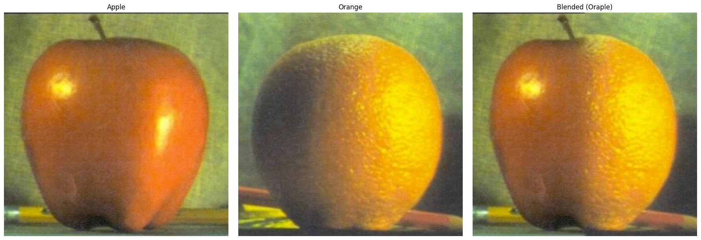
Apple and orange (images/p24_apple_orange.png)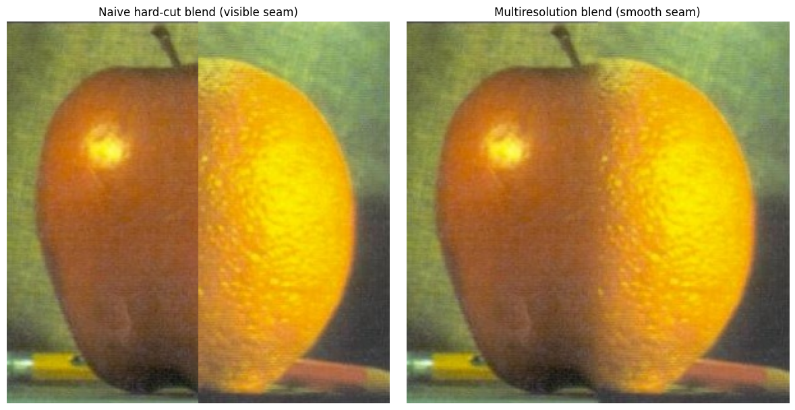
Naive hard cut vs. multiresolution blend (images/p24_oraple.png)The naive paste leaves an obvious vertical discontinuity where rind texture and background lighting jump abruptly, while the multiresolution blend transitions smoothly across a wide region.
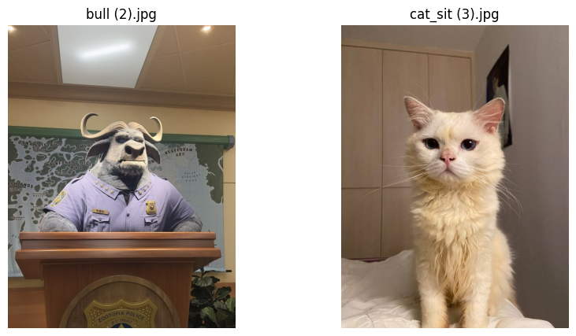
Source photos (images/p24_seam_sources.png)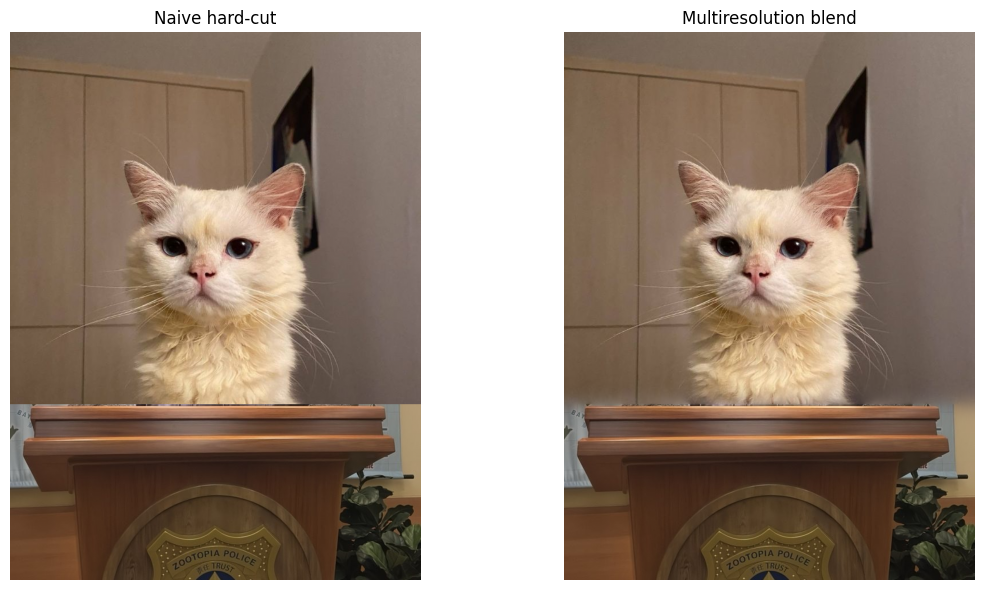
Naive vs. multiresolution (images/p24_seam_result.png)I used a horizontal seam at 71% of the image height, found by drawing a preview line on the source photos before running the slower blend.
Observation: this pair does not blend as seamlessly as the apple/orange. That is not a flaw in the algorithm: the two photos have very different backgrounds (an office wall vs. bedding). Multiresolution blending smooths the transition between images but cannot make unrelated background content belong together. The oraple worked cleanly because both images shared the same backdrop and framing.
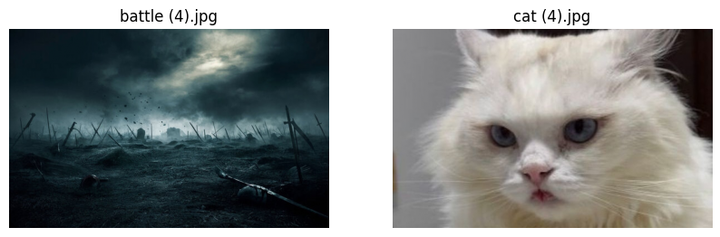
Source photos (images/p24_irreg_sources.png)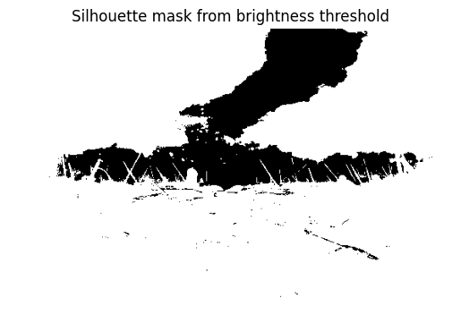
Silhouette mask (images/p24_irreg_mask.png)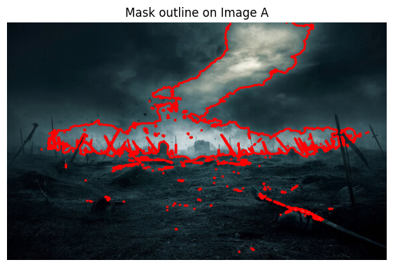
Mask outline overlaid (images/p24_irreg_overlay.png)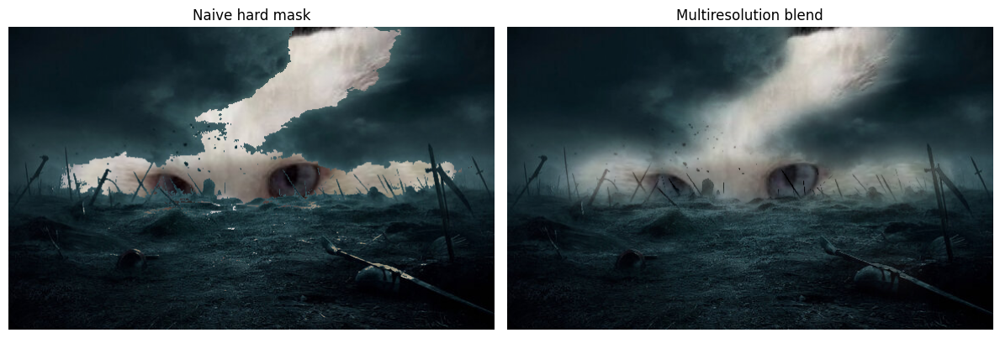
Naive vs. multiresolution (images/p24_irreg_result.png)The irregular mask is generated from image content: thresholding the battlefield photo's brightness at 0.35 to carve out its dark regions. This gives a non-geometric boundary that follows real content, closer to the freeform masks in Figure 8 of the Burt-Adelson paper than a circle or polygon would be.
I chose the irregular battlefield blend as my favorite result for this illustration. Each row is one stack level; the columns show image A masked, image B masked, and the blended band.
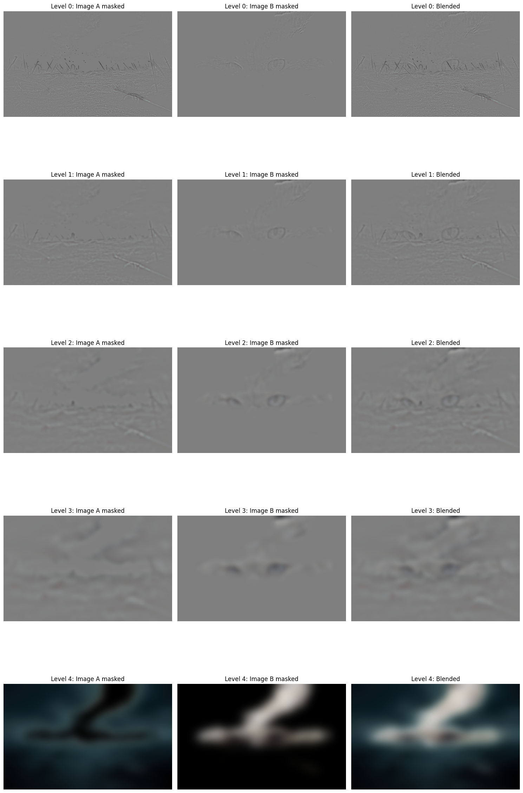
5x3 process grid (images/p24_fig10_grid.png)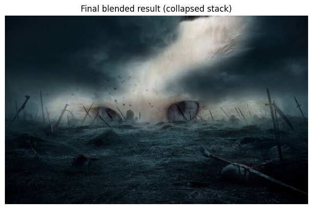
Final collapsed result (images/p24_fig10_final.png)At the finest levels, each image's masked contribution concentrates near the mask boundary, where local detail and edges are strongest. The transition stays sharp there, which is fine because fine detail switching abruptly doesn't read as a seam. At the coarsest level the contributions blend across a much wider region, which makes the overall color and shading change gradual even though the boundary itself is irregular. This is the same mechanism as the Figure 3.42 recreation, applied to my own irregular mask.
The most important thing I learned is that convolution, differentiation, blurring, sharpening, hybridization, and blending are the same small set of operations recombined in different orders. The associativity of convolution kept turning two-step processes into single equivalent filters: blur-then-differentiate collapsed into one Derivative-of-Gaussian filter (verified to floating-point precision), and the same blur-subtract-scale-add logic reappears in unsharp masking, in the high/low split for hybrid images, and in the Laplacian stacks behind multiresolution blending.
A second lesson, learned the hard way: the filtering math is usually the easy part, and it's rarely where things go wrong. Hybrid images worked or failed depending mostly on whether two eye coordinates were estimated to within a few pixels, and on whether both sources had comparable frequency content, not on the low-pass/high-pass code. Blends succeeded or failed on whether the two photos shared a compatible background. And the Gaussian stack only became useful for blending once I noticed that reapplying a fixed sigma barely increases the blur, and that sigma needs to grow multiplicatively across levels. What you feed a filter, and what you assume about the content just outside its boundaries, matters as much as the filter itself.